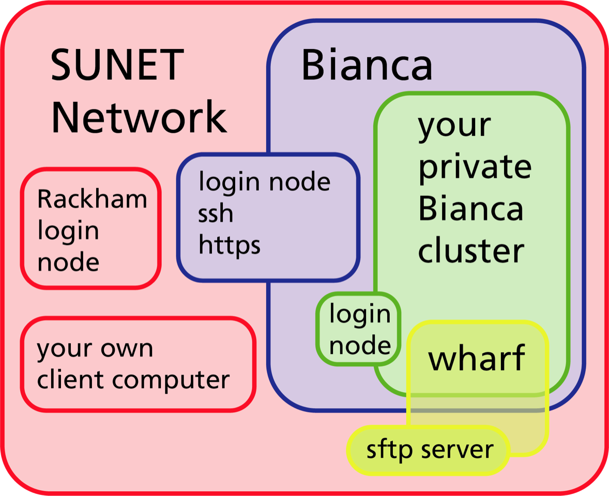

NAISS-SENS, sensitive data and Bianca¶
Objectives
- We'll briefly get an overview of kinds of sensitive data
- ... and the Bianca system
Content (To remove later)
- extended from intro course
- what is sensitive data?
- puba & timelines
- how to apply for projects
- project management
- LINK to extra material
- contact persons
Sensitive personal data¶
- https://www.snic.se/allocations/snic-sens/
- Traced to now living persons, e.g.
- human genomic data
- images/videos containing persons
- health registry (health data records from healthcare providers)
-
More about sensitive data
-
When in doubt, contact your university's data protection officer.
- Generally, there must be a Data Processing Agreement between UU and the data controlling university.
Apply for project¶
Bianca¶
- Bianca is a great platform for computationally intensive research on sensitive personal data. It can also be useful for:
- national and international collaboration on sensitive personal data (without a high compute need)
- other types of sensitive data
- Bianca is not good for:
Bianca's design¶
- Bianca was designed
- to make accidental data leaks difficult
- to make correct data management as easy as possible
- to emulate the HPC cluster environment that SNIC/NAISS users were familiar with
- to provide a maximum amount of resources
- and to satisfy regulations.
Bianca has no Internet¶
... but we have “solutions”

- Bianca is only accessible from within Sunet (i.e. from university networks).
- Use VPN outside Sunet. Link to VPN for UU
- You can get VPN credentials from all Swedish universities.
- The whole Bianca cluster (blue) contains hundreds of virtual project clusters (green), each of which is isolated from each other and the Internet.
- Data can be transferred to or from a virtual project cluster through the Wharf, which is a special file area that is visible from the Internet.
keypoints
- bullet 1
- bullet 2